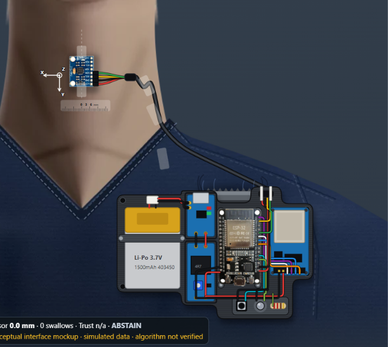
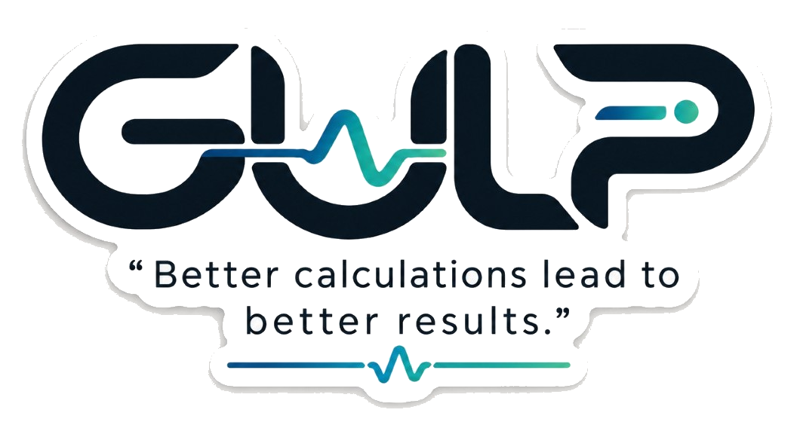

01 / GULP MODEL
Prototype concept
Project model visualization. The pictured hardware is not connected to this website; no live sensor readings are received.

GULP · STUDENT RESEARCH PROTOTYPE
A wearable sensing project exploring how personal session records and neck movement signals might support conversations about swallowing.
Research prototype only. It does not diagnose dysphagia or assess swallowing safety.
Swallowing is something most people never have to think about. When it becomes difficult, keeping track of what happens at mealtimes can matter to the person, their family, and their care team.
GULP is a student prototype exploring a simple idea: give each person a private place to organize session notes and, when available, swallowing-related device signals.
Population estimates help explain why accessible assessment and research matter. They do not predict an individual’s health.
U.S. adults reported dysphagia in the past 12 months in a 2022 population estimate.
Source: Bhattacharyya et al., 2024 ↗Percent reporting dysphagia in the previous 12 months. Population estimates from U.S. survey data; not a GULP measurement.
Self-reported survey estimates describe a population and may differ from clinically confirmed diagnoses. GULP does not screen, diagnose, or measure prevalence.
GULP’s prototype uses a neck-worn motion sensor linked to an ESP32 and a battery. The attached image shows the planned setup; device integration in this site remains a simulation.

Project model visualization. The pictured hardware is not connected to this website; no live sensor readings are received.

Clinicians use moving X-ray imaging with contrast to examine swallowing. This is a clinical assessment, not a GULP capability.
Clinical context: ASHA ↗
Published swallowing-sensor studies have used combinations of sensors. The pictured setup is from prior research and is not the GULP device.
Image and article source: Sensors journal ↗Images are linked to their source pages. The clinical images illustrate assessment methods and do not show a GULP reading or a particular patient outcome.
Try the dashboard immediately as a guest, or make a profile using a name, username, and password. No email address is needed.
Open an empty dashboard. No account or personal details needed.
See the planned session controls and signal display, clearly marked as a simulation.
Optional account and session notes stay in this browser for demonstration only.
! GULP is not for diagnosis or emergency decisions. A change in swallowing should be discussed with a qualified health professional.
MEET THE TEAM
A student research prototype developed by Mohamed Emad and Omar Ayyoup.
YOUR SPACE, YOUR RECORD
Open the demo without signing up. A local profile is optional.
YOUR PERSONAL GULP SPACE
Your mealtime record, session controls, and device overview.
Start a simulated session to explore how the prototype interface might work. Its signal preview and event markers are for demonstration only.
No saved sessions yet. Your notes will appear here.
SESSION WORKSPACE
Use the controls to explore a proposed session flow.
The waveform is generated by this webpage to illustrate the planned screen. It is not a measured swallow, health reading, or validated algorithm output.
YOUR PERSONAL RECORD
Review dates and notes you chose to save.
Add a session to start your timeline.
Bars count saved session notes by date. They are not swallowing scores or clinical readings.
No notes saved yet.
HARDWARE OVERVIEW
A preview of how device setup could appear.
This demo cannot connect to Bluetooth or read from the pictured device.
A real connection needs the device firmware, communication protocol, and a tested data pipeline.
Description follows the supplied model image; it does not confirm final hardware specifications.
YOUR SPACE
Personalize this local demo profile.
This demo has no account server, cloud sync, encryption, or clinical review. Passwords and notes are stored locally. Do not use sensitive health information.
The dashboard demonstrates a possible GULP workflow. It does not assess swallowing safety, provide a diagnosis, or replace advice from a qualified clinician.